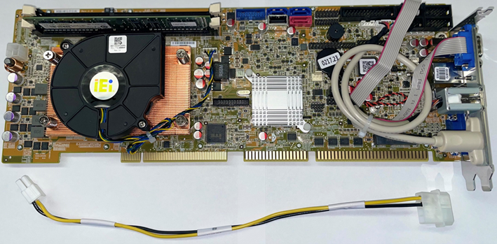
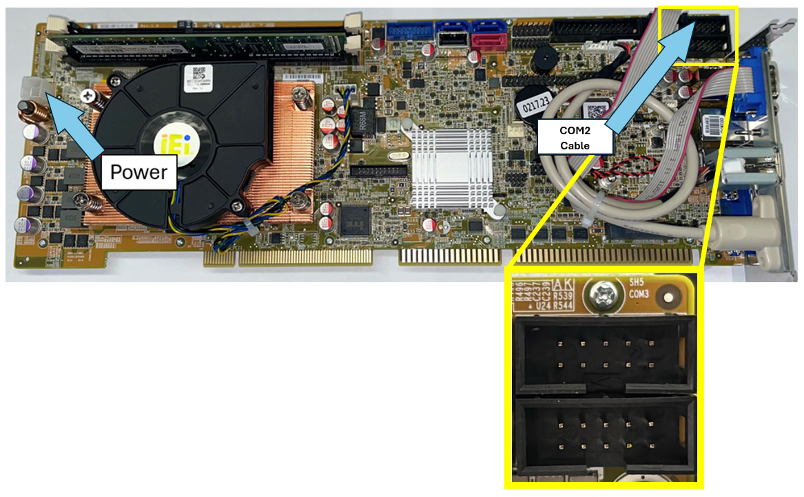

Upgrading the DxI Instrument to Windows 10 from an Older Operating System
This procedure describes how to upgrade a Windows XP or Windows 8 DxI instrument to Windows 10. This procedure covers upgrading both the analytical unit (AU) CPU PCB and the console PC from the older versions.
Note: If the console PC does not have a USB BACKDRIVE connected you must first connect a USB flash drive to the console PC and save a backup copy of the database to the flash drive. See
Database - Restoring Console PC from Backup for more information.
Note: Give to the customer any documentation (e.g. stuffers) that shipped with the PCB.
Figure 297: Windows 10 CPU PCB with power cable

Prepare the instrument
If the current version of the software is earlier than 7.0.0, upgrade the software to version 7.2.0 or later before continuing.
Note:
If the system is non-operational or unable to be upgraded, perform as many steps (substeps 1.a. through 1.d.) as possible.
In the event you find it is not possible to complete the upgrade, perform as many of the remaining steps in Step 1 (substeps 1.b. through 1.h.) as possible.
Insert the DxI software CD into the CD drive. The installation application will prompt you to select actions and confirm notifications.
Select
Yes or
OK for all other messages during the installation.
Note: If the screen is blank for several minutes, use the
Alt + Tab keyboard shortcut to display open applications and to find any hidden dialogs that you need to respond to.
Select
Yes, I want to restart my computer now and select
Finish.
Remove the software CD from the external CD-ROM drive.
After the PC restarts, if there is a
There are no defined assays... notification, load a current eAPF.
Record the system
run hours and
test count. These can be found in the details of the most recent event in the Event Log.
Perform an Immediate Backup to preserve the updated database.
Go to
Configure > PC Admin > System Admin > Shutdown Instrument to close the application.
Type the password
Access2Support and select
OK.
At the notification
You must now turn off the instrument, using the instrument power switch, select
OK.
After the applications have closed use the power switch to turn off the instrument.
Open the upper left front cover of the instrument.
Disconnect the COM2 serial ribbon cable from the CPU PCB.
Disconnect the following cables from the right end of the CPU PCB.
Video
Keyboard
Mouse
Serial
Network (LAN1 and
LAN2)
Note: Before you disconnect the Ethernet cables from the LAN1 and LAN2 connectors, be sure to label each cable.
USB
Remove the CPU PCB from the card cage (one screw).
Install the CPU PCB
Install the new CPU PCB into the card cage (one screw).
Figure 299: Windows 10 CPU PCB Connector Detail

Connect the COM2 ribbon cable to the CPU PCB.
Connect the CPU 12V power cable from J7 on the CPU power distribution PCB to the power connector on the left side of the CPU PCB.
Figure 300: CPU PCB Power Cable Connected to the Power Distribution PCB
Note: Be sure the CPU 12V power cable is connected to the power distribution board with the cables on the connector toward the front side of the instrument as shown in the image above.
Connect the following cables to the right end of the CPU PCB.
Video
Keyboard
Mouse
COM1 Serial cable
Network (LAN1 and
LAN2)
USB to
USB0 connector (integrated instruments only)
USB to
USB4 connector (Bulk Feeder II instruments only)
Figure 301: Windows 10 PCB Connectors
Note:
The cable with the ferrite bead from the AU network hub connects to
LAN1 in the Windows 10 CPU PCB.
A keyboard/mouse cable is provided with the CPU PCB. If the cable is missing, connect the keyboard cable to the CPU keyboard/mouse connector. If necessary, you may connect the mouse from the console PC to a USB connector on the CPU.
The analytical unit (AU) CPU must be turned on. Do not shut down the AU CPU.
If the DxI instrument is connected to an LAS, pause the connection unit to prevent LAS samples from loading during the repair process. See
Servicing Instruments Connected to LAS for more information.
Go to
Windows > Start > Shut down > Shut down and turn off the console PC, or
In the main menu of the console application go to
F8 Configure > F7 PC Admin > F8 System Admin > F1 Shut Down PC > F1 OK.
If Windows is not open, turn off the console PC. You might need to hold in the power button on the PC for several seconds to turn off the PC.
Disconnect the following cables from the old console PC, as applicable:
Power
Monitor
Hand-held bar code reader
Keyboard
Mouse
Touchscreen
LIS Serial connections
AU (LAN1) Ethernet
PROService (LAN2) Ethernet
Dynamic LAS (LAN3) Ethernet
Printer
Backup drive USB
Connect the following cables to the new console PC, as applicable:
Power
Monitor
Hand-held bar code reader
Keyboard
Mouse
Touchscreen
LIS Serial connections
AU (LAN1) Ethernet
PROService (LAN2) Ethernet
Dynamic LAS (LAN3) Ethernet
Printer
Backup drive USB
Turn on the new console PC.
Note: When restarting a Privacy & Security-compliant Windows 10 console PC, you must type the security password
Access2Admin in the dialog to open Windows.
Figure 302: Security Dialog
Verify communication between the console PC and the instrument
Press the
Windows key and select
Command Prompt or type
command prompt to open the Command Prompt window.
In the Command Prompt window type
ping 192.168.2.4 and press
Enter.
Verify the console PC received a reply from the AU.
Figure 303: Verifying the Console PC Receives a Reply from the AU
Note: If the error
Destination Host Unreachable is displayed
You might have typed the IP address incorrectly. Confirm you typed the IP address correctly.
The Windows 10 console PC might not be connected to a working network. In that case, the error
Destination Host Unreachable will be displayed if you ping any IP address, including the address of the console PC.
The AU and console PC might have been assigned the same IP address, which means there will be a network conflict and no communication can occur. To resolve the conflict, change the console PC IP address to 192.168.2.1, reboot the instrument and console PC, and ping addresses 192.168.2.1 through 192.168.2.10 again.
Note: When you restart a Privacy & Security-compliant Windows 10 console PC, you must type the password
Access2Admin in the dialog to open Windows.
Figure 304: Security Dialog
The Ethernet cable might not be connected to the console PC. The network connector on the console PC is located between the USB 3.0 connector and the Video connector. See
Console PC Connector Identification for more information.
The Ethernet cable might be connected to the instrument incorrectly. The DxI instrument has two network connectors identified as
PC and
UCTA. If unsure which connector to use, try both, or connect to the spare connector on the underside of the sample processing unit (SPU), or connect directly to the AU hub.
Enable Remote Desktop from the Console PC to the AU
Press the
Windows key and type
remote to open Remote Desktop Connection.
Remote Desktop Connection connects the console PC to the instrument CPU so that you can control the instrument and its applications from the console PC. When connected, the Remote Desktop window will display the Windows 10 Desktop of the instrument CPU.
In the
Computer box type
192.168.2.4 and select
Connect.
If prompted, type
user for the username and
tech for the password.
At the RDS warning dialog, if prompted, select the
Don't ask me again for connections to this computer checkbox and select
Yes.
Copy the instrument alignments file from the console PC to the AU CPU
Note:
Perform all of the following sub-steps here in step 8 exclusively on the console PC.
Replacing the CPU PCB on the AU resets information about supply, run hours, and test counts.
Verify the USB BACKDRIVE (or USB flash drive) is connected to the console PC.
Map the AU network drive to the console PC.
Press the
Windows key and select
File Explorer.
Right-click
Computer and select
Map Network Drive.
In the Folder window type
\\192.168.2.4\c$
If it is available, select
Reconnect at Sign In. Select
Finish.
Go to the Backup folder in
BACKDRIVE (E:) (or the USB flash drive).
Right-click
xxxxxx_specific.ini and select
Copy. (xxxxxx is the serial number of the instrument.)
Go to the mapped AU drive
Figure 305: Mapped AU Drive
Note: Indicated drive letter may vary.
Right-click the
AU folder and select
Paste.
Note: If there is no
AU folder, right-click the mapped AU drive (C$ (\\192.168.2.4), select
New and select
Folder. Right-click
New folder, select
Rename, and type
AU.
Paste xxxxxx_specific.ini into the
AU folder.
In the
AU folder, right-click
xxxxxx_specific.ini, select
Rename, and type
specific.ini.
Install the software
Insert the DxI software CD into the CD drive. The installation application will prompt you to select actions and confirm notifications.
The software version that you install on the console PC must be the same as or newer than what is installed on the AU CPU.
Note: Windows 10 requires system software version 7.2.0 or newer. If you attempt to install an older version of the system software you will encounter an operating system mismatch error.
If prompted to confirm the IP address for the AU CPU, type
192.168.2.4 and select
Next.
If the IP address entered for the AU CPU does not match the actual IP address, or if the console PC is unable to communicate with the AU CPU, the software already has been installed.
If the installation application displays the error
Unsent Data stored on the instrument, clear critical event notifications again.
If the installation application displays the notification and question
Instrument version is the same. Do you wish to overwrite? select
Yes.
Select
Yes or
OK for all other messages during the installation.
If the screen is blank for several minutes, use the
Alt + Tab keyboard shortcut to display open applications and to find any hidden dialogs that you need to respond to.
Select
Yes, I want to restart my computer now and select
Finish.
Remove the software CD from the external CD-ROM drive.
After the PC restarts, at the notification
There are no defined assays..., select
Cancel.
If you are restoring from a backup, see
Database - Restoring Console PC from Backup for more information. Follow the options for manually replacing database folders.
Do not use the restore utility to bring a 5.x database into a 7.x version of software.
If you are not restoring from a backup, install eAPF by opening setup.exe from the prepared USB drive.
If UI initialization fails and a
Failed to Synchronize Clocks notification is displayed, verify the
Time Zone setting on the console PC matches the setting (GMT/UTC) on the AU. Refer to
Verifying the Date and Time Settings from Windows Desktop.
WARNING! Do not initialize the instrument with
Remap selected, which will corrupt the test counts of all on-board reagents and reset them to full.
Configure the system
Go to
Configure > Tests. If the APF version displayed is not the current version, update the APF.
Restoring from backup overwrites APF with the version that was in use when the backup was made.
If the instrument has been upgraded from Windows XP, replace the onboard substrate bottles and waste bag.
Open the service application and go to
Diagnostics > Prime Fluidics. Prime the sample pump the default number of cycles.
Attach the upper left card cage cover.
Remove any cover interlock switch bypass devices and close the instrument covers.
Restart the instrument to launch the Machine Control application.
Note: To avoid application errors or other issues after the loss of MCC power you must restart the AU or restart the Machine Control application on the AU.
Go to
Diagnostics > Initialize. Select
Clean Out All Positions and
Remap and select
OK.
Confirm the LAS connection is operating as expected. On the PrepLink console clear
Loading Paused for this connection unit. Observe several LAS samples as they pass through the connection unit to the DxI. Verify the samples aspirate and process on the DxI successfully. See
Servicing Instruments Connected to LAS for more information.
 Note: Be sure the CPU 12V power cable is connected to the power distribution board with the cables on the connector toward the front side of the instrument as shown in the image above.
Note: Be sure the CPU 12V power cable is connected to the power distribution board with the cables on the connector toward the front side of the instrument as shown in the image above. Note:
Note:
 Note: If the error Destination Host Unreachable is displayed
Note: If the error Destination Host Unreachable is displayed Note: Indicated drive letter may vary.
Note: Indicated drive letter may vary.